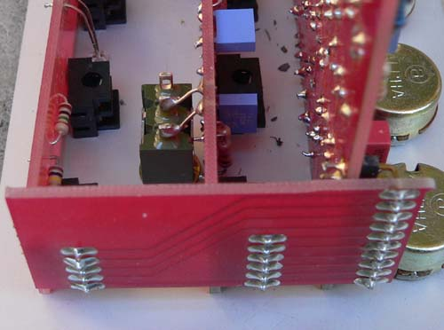

|
Serge Voltage Controlled Slope for music synthesizers.
This is a licensed adaptation of the classic Serge DTG/DUSG The Serge VCS module released in conjunction with from bananalogue.com is an extremely versatile control voltage generator and audio source. In the early 1970s, Serge Tcherepnin developed the Positive Slew and Negative Slew modules for the original Serge synthesizer. In time these merged into the classic Dual Universal Slope Generator. The Bananalogue VCS/ CGS775 is an adaptation of Serge's original circuit with a few new features. The VCS is a unity gain voltage follower. The rising and falling slopes are independently and jointly voltage controllable over a wide range. VC Transient Envelope Generator A pulse at the trigger input will start the envelope, or a gate input will sustain the level and the envelope will fall when the gate goes low. Rise and fall are independently and jointly voltage controllable, with variable linear and exponential wave shapes. VC Portamento Voltage is slewed according to the rise and fall times. VC LFO When the cycle switch is thrown, the trigger input is connected internally to the end trigger output, creating a VC clock with variable waveform and independent rise and fall times. VC Oscillator While not as wide ranged, or accurate as a dedicated oscillator module, the VCS is still an excellent audio source. The Exp CV input is scaled approximately to the 1v/oct standard. The Output wave can be swept from triangle to saw with linear and non-linear waveforms. End Out also produces a pulse waveform. VC Non-Linear Audio Processor (Low-Pass Gate) If an audio rate signal is slewed, the module responds like a VCF, and a rough VCA. The signal is low-pass filtered down to silence, similar to a low-pass gate. Envelope Follower Positive and negative peak detection envelope follower. VC Pulse Delay Trigger input starts the envelope and a trigger will be produced again at the End Out when the envelope completes its cycle. Sub-Harmonic Generator If a series of triggers are applied to the VCS faster than the total rise and fall times, the module will divide the incoming signal by a whole number. In the audio range the output will be the sub-harmonic series. (Description taken from the former Bananalogue site)
A little on how it works.Closing switches EXP. RISE or EXP. FALL feeds some of the output back into the voltage controlled inputs, changing the curve of the response - i.e. allowing for increasing or decreasing rates of change of the output, thus allowing the output waveshape to be non-linear.AC out gives the non-inverted signal, but centered around 0V. For those interested in the theory of operation, I recommend Tim Stinchcombe's page on the subject.
The schematic of the VCS.
Construction
Notes:
Before you start assembly, check the board for etching faults. Look for any shorts between tracks, or open circuits due to over etching. Take this opportunity to sand the edges of the board if needed, removing any splinters or rough edges. You will need to tidy up the break points for the panelized boards. When you are happy with the printed circuit boards, construction can proceed as normal, starting with the resistors first, followed by the IC socket if used, then moving onto the taller components. Take particular care with the orientation of the polarized components such as electrolytics, diodes, transistors and ICs. When inserting ICs into sockets, take care not to accidentally bend any of the pins under the chip. Also, make sure the notch on the chip is aligned with the notch marked on the PCB overlay. All parts are mounted directly on the PCBs with the exception of the cycle switch. The "VC Both" jack should be fitted to the panel, along with the assembled BAN01A board, then adjusted so that its pins contact the appropriate pads on the rear if the BAN01A board. Solder it in place. The 90%deg; single row headers that are used to connect the sub PCBs to the bus board should be soldered with the plastic carrier against each of the sub PCBs. If you solder them on the wrong way around, the plastic carrier will force the bus board up, and risk fouling with the case.
The following photographs of the earlier Euro version are to assist with assembly of the boards. The only significan change between these photos and the new double sided PCB is that the power connector has been rotated 180 degrees to match the Doepfer standard. 

Setting upAdjustments on the VCS board are set to obtain a 0 to +5 volt level when the unit is cycling, producing a 100Hz triangle wave. An oscilloscope is required for this adjustment. In an oscilloscope is not available, adjust for the least distorted sounding waveshape. Notes:
Parts list This is a guide only. Parts needed will vary with individual constructor's needs.
Classic Serge style knobs can be purchased from If anyone is interested in buying these boards, please check the PCBs for Sale page to see if I have any in stock.
Can't find the parts? See the parts FAQ to see if I've already answered the question. Also see the CGS Synth discussion group.
Article, art & design copyright 2006 by Ken Stone
| |||||||||||||||||||||||||||||||||||||||||||||||||||||||||||||||||||||||||||||||||||||||||||||||||